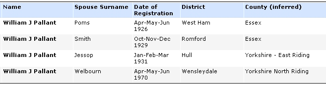

1909 SEP 13 : William's mother died in the Union Infirmary, St. Johns Hill, London, England
1911 APR 02 : census day
| 1911 England Census : Brook Cottage, The Swale, Benhall, Saxmundham | ||||||
| Name | Relation |
Condition/ Yrs married |
Age in 1911 | Birth Year | Occupation | Where Born |
| Mary Ann Hill | Head | Widow | 37 | 1874 | -- | Suffolk Bloxhall |
| William Hill | Son | -- | 14 | 1897 | Farm Labourer | Suffolk Snape |
| Louisa Hill | Daughter | -- | 13 | 1898 | -- | Suffolk Shen |
| Rosa Hill | Daughter | -- | 11 | 1900 | School | Suffolk Sudbourne |
| Percy Hill | Son | -- | 9 | 1902 | -- | Suffolk Sudbourne |
| Violet Hill | Daughter | -- | 8 | 1903 | -- | Suffolk Oxford |
| Agnes Hill | Daughter | -- | 6 | 1905 | -- | Suffolk Oxford |
| Doris Hill | Daughter | -- | 1 | 1910 | -- | Suffolk Snape |
| Thomas Gooding | Brother | Single | 27 | 1884 | Farm Labourer | Suffolk Oxford | Edward Pallant | Boarder | Widower | 34 | 1877 | Malsters Labourer | Suffolk Farnham |
| Violet Pallant | Boarder | -- | 3 | 1908 | -- | Wandsworth Infirmary |
| William Pallant | Boarder | -- | 1 | 1910 | -- | Kings College Hospital London |
1911 : William's father married Mrs. Mary A. Hill (formerly Mary Ann E. Gooding)
1913 MAR 13 : Williams's half-brother Edward Latham, 8 years old, emigrated to Canada
1913 SEP 25 : William's half-sister Alice Latham, 13 years old, emigrated to Canada.
1914 APR 06 : William was admitted to Barnardo's care. (Description: Hair: Brown; Eyes: Grey; Complexion: Fair; Height 2 ft. 5 in.; Chest: 17 in.; Weight: 18 lbs; Condition: much under-developed, weakness of both lower limbs; kept in H.M Hospital for a month)
1924 MAR 02 : William was christened Place: Bengeo, Hertfordshire, England; Collection: St Michael and All Angels; Film Number: 1537867; Information: Name: William Pallant; Gender: Male; Birth Date: 14 Jul 1908; Christening Date: 2 Mar 1924; Christening Place: Bengeo, Hertfordshire, England; Age at Christening: 15; Father: Edward Pallant; Mother: Alice.
1927 JAN 07 : Barnardo's report that William, 17 years old, has been returned to his father
1931 FEB 10 : Willam was married in Hull ( Marriages Mar 1931, Pallant William J. Jessop Hull v.9d, pg.417 )
| 1931. Marriage solemnized at the Register Office in the District of Hull in the County of Kingston upon Hull | |||||||
| When Married | Name and Surname | Age | Condition | Profession | Residence | Father's Name | Profession of Father |
| Tenth February 1931 |
William John Pallant | 21 years | Bachelor | Cleaner Salvation Army Hall | 38 Staniforth Place, Hull | Edward Pallant | General Labourer |
| Harriet Elizabeth Jessop | 39 years | Widow | -- | 38 Staniforth Place, Hull | Herbert Cook | Farm Labourer | |
| Married in the Register Office by Certificate before me, | Thomas J. Bloom, Registrar; F. Pickering, Superintendent Registrar | ||||||
| This Marriage was solemnized between us | W. Pallant | in the Presence of us | W. N. Cummings | ||||
| H. E. Jessop | Agnes Hunter | ||||||

1921 : Harriet was married to Alfred Jessop, ( unconfirmed : Marriages Sep 1921, Cook, Harriet, Jessop, Hull, v.9d, pg.674 ). I see in FreeBMD : ( Deaths Mar 1935, Jessop, Alfred, 33, Hull, v.9d, pg.360 )
1937 JUN 03 : Barnardo's report correspondence with Adjutant, East Riding Heavy Brigade about a Private 1722280 (William)
1941 JUL 14 : Barnardo's report William is married with two children
1971 AUG : (61) William is living in Bedale, North Yorkshire, England at 16 Rigby Terrace, Bedale Road (near Northallerton)
1984 MAR 25 : William, age 74, died in Central Cleveland, Cleveland, England
Could any of these other marriages be our William ?
-
John William Pallant
( Births 2nd qtr 1932, Pallant John W, Cook, Hull, v.9d, pg.475
)
1932 : John William was born in Hull
- Rose May Pallant ( unconfirmed : Births 2nd qtr 1934, Pallant Rose M, Cook, Sculcoates, v.9d, pg.206 )
- 1937 : John and Rose - front and John and Rose - back. John William (5) and Rose May (3).
- 1937 : There is also this girl taken in the same place - I think it says Nancy (15) [Nancy - front], [Nancy - back]. So far I haven't found any other mention of Nancy in Granny's stash. Maybe it's Nancy Jessop ( Births 3rd qtr 1922, Jessop, Nancy, Cook, Hull, v.9d, pg.432 ) and ( Marriages 3rd qtr 1941, Jessop Nancy, Mapplebeck (George H), Hull, v.9d, pg.652 ) Googling "nancy mapplebeck" gets a helper at Walkley Junior School in Sheffield.
- 1939 : William
- 1941 : William, in uniform
{kind=link}
{kind=link}
![[Nancy - front]](images/nancy-photo-front.jpg){kind=link}
![[Nancy - back]](images/nancy-photo-back.jpg){kind=link}
{kind=link}
I thought I might be on to something with the maternal "Gooding" relatives mentioned in the notes that Barnardo's had for William but unfortunately for us they are Mrs. Hill's relatives and not Alice's. Read the list of William's relatives.
{kind=link}